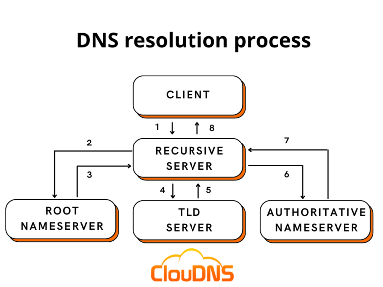

A Complete Guide to Core Internet & Web Concepts
DNS stands for Domain Name System. It is essentially the phonebook of the internet. Rather than remembering the numerical IP address of every website you want to visit, DNS allows you to type in a human-friendly name — like www.google.com — and automatically translates it into the corresponding IP address that computers use to find each other.
Without DNS, browsing the internet would require you to memorise strings of numbers like 142.250.74.46 for every site you visit. DNS makes the web far more usable by handling all of that translation invisibly in the background.

When you type a domain name into your browser, your computer first checks its own local cache to see if it already knows the IP address from a recent visit. If not, it sends a query to a DNS resolver — usually provided by your internet service provider or a public service like Google's 8.8.8.8.
The resolver then works through a hierarchy of DNS servers to find the answer. It starts by asking a root name server, which directs it to a Top-Level Domain (TLD) server (for .com, .org, etc.), which in turn points to the authoritative name server for that specific domain. That server finally returns the correct IP address, and your browser uses it to connect to the website.
DNS doesn't just store IP addresses. It stores different types of records for different purposes. The most common is the A record, which maps a domain to an IPv4 address. AAAA records do the same for IPv6 addresses. MX records tell email servers where to deliver mail for a domain. CNAME records create aliases that point one domain name to another.